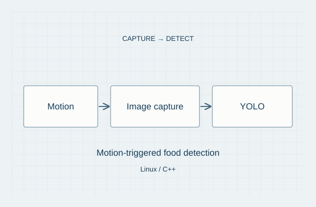

Embedded systems / Project 04
Smart Fridge System.
Motion-triggered capture meets food detection.
- Period
- Jan–Mar 2026
- Role
- Team lead
- Team
- Five people
Overview
This project turned a refrigerator into an embedded vision system: observe activity at the door, capture an image when relevant movement occurs, and pass it into an object-detection pipeline. The goal was to reduce manual tracking and provide a clearer view of available food.
My contribution
I led a five-person team through requirements definition, pipeline planning, and system integration. We divided the workflow into sensing, image capture, inference, and item-state reporting so that each layer could be tested independently before end-to-end integration.
System design
The system combined motion-triggered image capture with YOLO-based food detection in a Linux and C++ workflow. Integration connected the sensing and capture behavior with inference and its output.

System demonstration
The project demonstration shows the integrated system. Watch it here or open the video on YouTube.